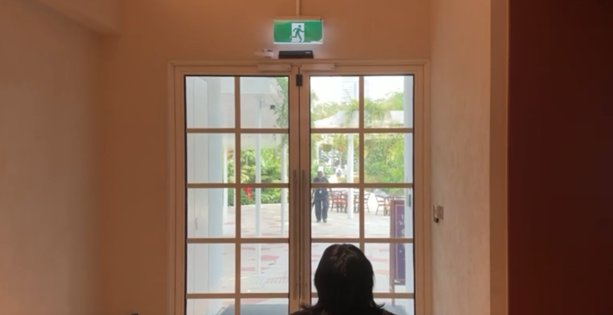
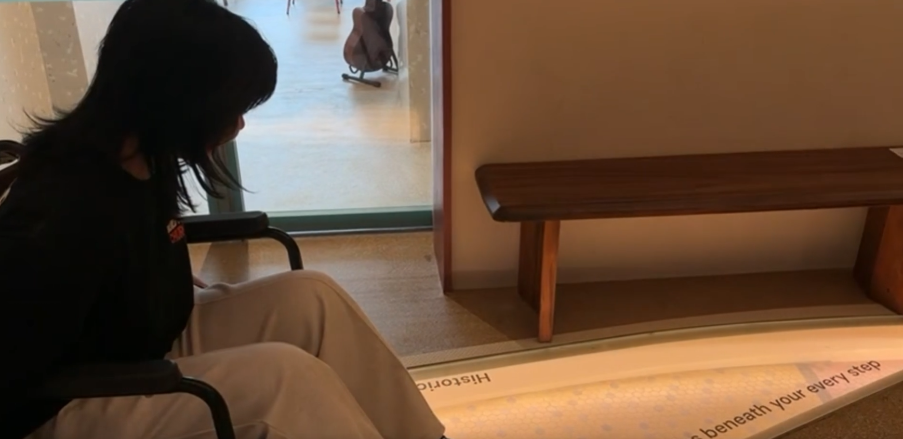
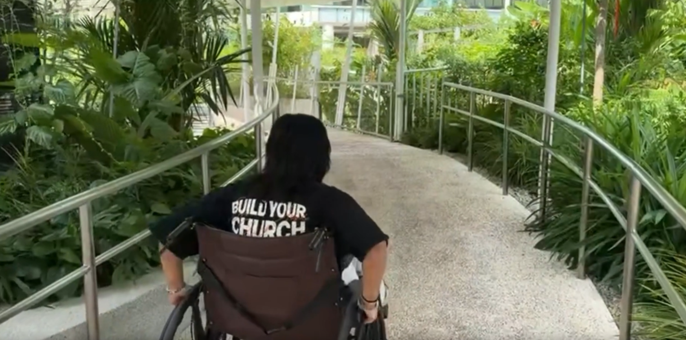
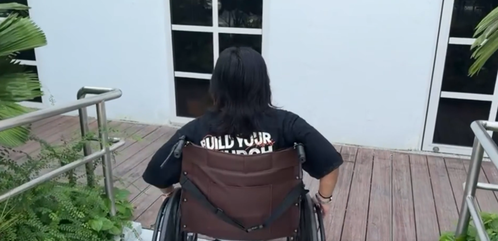
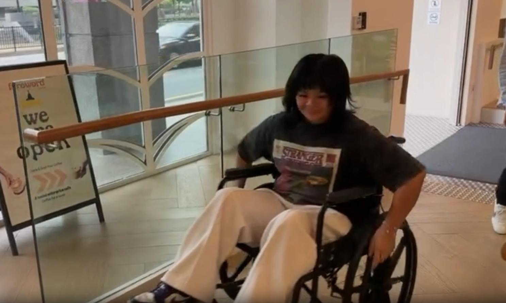
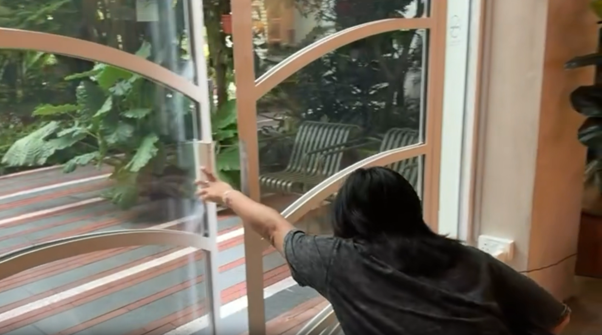
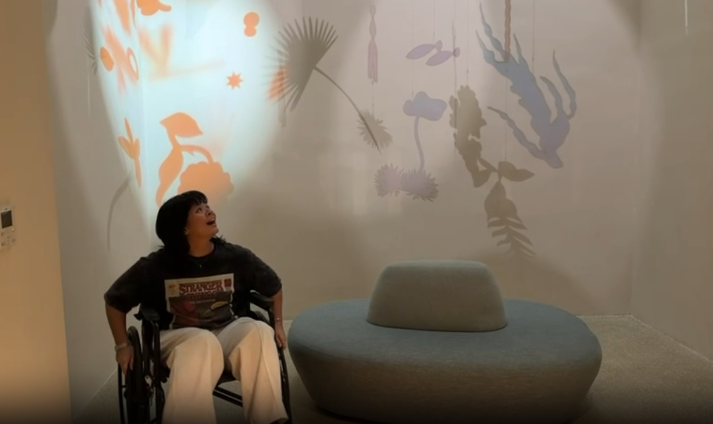
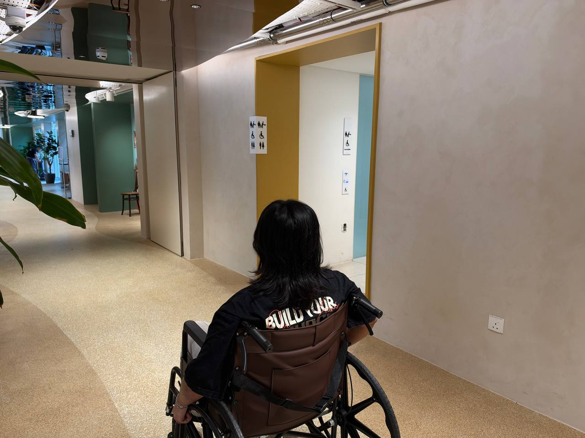
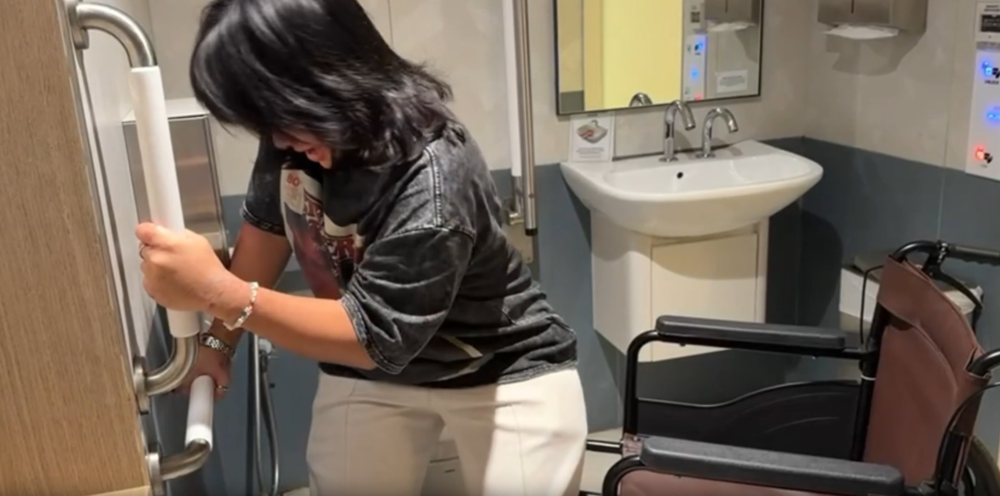
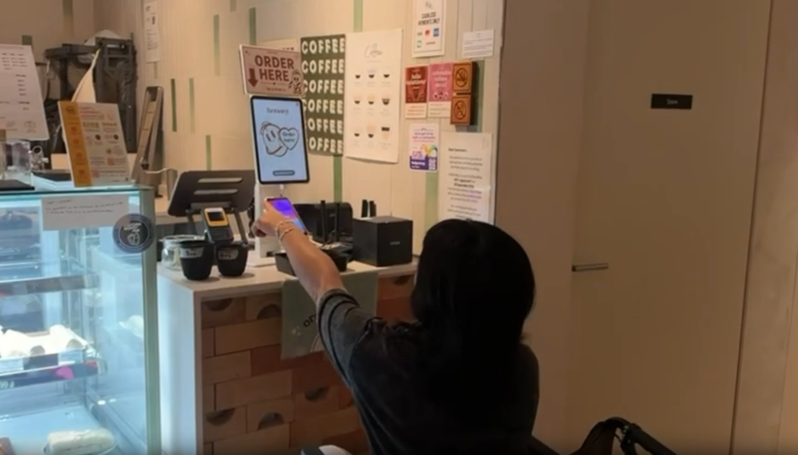

↗
Why this experience matters
- Experience TSH spaces from a wheelchair and notice barriers to independent movement.
- Connect these experiences to the inclusive train carriage and build empathy.
Starts when the participant gets into the wheelchair; ends when it is returned.
Prioritise participant safety, comfort and choice.
Notice how signs placed high above eye level may be difficult to see or read from a wheelchair.


Compare the effort and control involved in moving up and down the Garden slopes from a wheelchair.


Help participants notice the physical effort of using a slope and consider how repeated slopes on everyday routes cause fatigue over time.

Experience how a push swing door can be difficult to approach and open independently from a wheelchair, reflecting infrastructure designed around able-bodied users.

Notice the difference between a room that feels calm and one that provides enough space for a wheelchair user to manoeuvre.

Consider the route to and use of an accessible toilet, including the strength, balance, space and body movement that some users may need.


Notice how a high menu can make it difficult for a wheelchair user to see choices and order independently.

Return the wheelchair to the exhibition space. Briefly connect the experience to the inclusive train carriage, then invite participants to share feedback and reflections.
Watch the workshop video before or during your docent shift.

Scan to open the participant feedback form